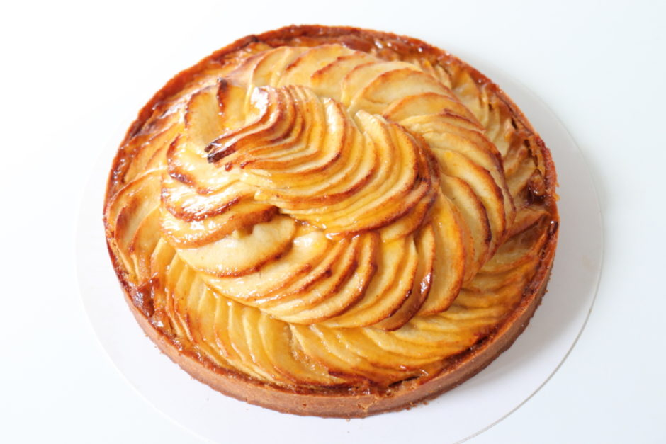

8INF876 - Conception / Architecture des systèmes infonuagiques
La tarte aux pommes
Recette
- Éplucher et découper en morceaux 4 Golden.
- Faire une compote : les mettre dans une casserole avec un peu d'eau (1 verre ou 2). Bien remuer. Quand les
pommes commencent à ramollir, ajouter un sachet ou un sachet et demi de sucre vanillé. Ajouter un peu d'eau si
nécessaire.
- Vous saurez si la compote est prête une fois que les pommes ne seront plus dures du tout. Ce n'est pas grave
s'il reste quelques morceaux.
- Pendant que la compote cuit, éplucher et couper en quatre les deux dernières pommes, puis, couper les quartiers
en fines lamelles (elles serviront à être posées sur la compote).
- Préchauffer le four à 210°C (thermostat 7).
- Laisser un peu refroidir la compote et étaler la pâte brisée dans un moule et la piquer avec une fourchette.
- Verser la compote sur la pâte et placer les lamelles de pommes en formant une spirale ou plusieurs cercles, au
choix ! Disposer des lamelles de beurre dessus.
- Mettre au four et laisser cuire pendant 30 min max. Surveiller la cuisson. Vous pouvez ajouter un peu de sucre
vanillé sur la tarte pendant que çà cuit pour caraméliser un peu.
Photo de la tarte aux pommes

Photo de Brr Brr Patapim